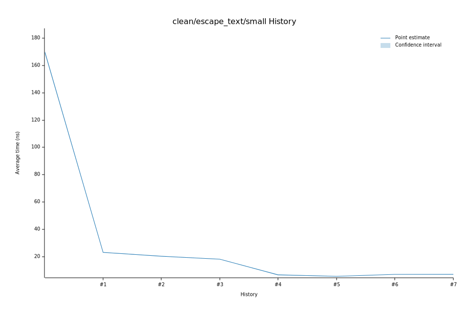

# 102023-01-21T06:04:06-08:00
|
Lower Bound |
Estimate |
Upper Bound |
| Value: |
7.24ns |
7.26ns |
7.29ns |
| Throughput: |
7644.13MiB/s |
7618.99MiB/s |
7591.79MiB/s |
| Change in Value: |
-0.2122% |
+0.7670% |
+1.7971% |
| Change in Throughput: |
+0.2127% |
-0.7611% |
-1.7654% |
Change within noise threshold.
# 92023-01-21T05:59:34-08:00
|
Lower Bound |
Estimate |
Upper Bound |
| Value: |
7.22ns |
7.24ns |
7.27ns |
| Throughput: |
7665.65MiB/s |
7640.32MiB/s |
7612.17MiB/s |
| Change in Value: |
+0.5988% |
+1.4260% |
+2.3949% |
| Change in Throughput: |
-0.5953% |
-1.4059% |
-2.3389% |
No change in performance detected.
# 82023-01-14T18:23:16-08:00
|
Lower Bound |
Estimate |
Upper Bound |
| Value: |
7.13ns |
7.16ns |
7.18ns |
| Throughput: |
7757.59MiB/s |
7729.85MiB/s |
7700.82MiB/s |
| Change in Value: |
-2.7897% |
-1.5235% |
-0.3915% |
| Change in Throughput: |
+2.8697% |
+1.5470% |
+0.3930% |
No change in performance detected.
# 72023-01-13T17:15:55-08:00
|
Lower Bound |
Estimate |
Upper Bound |
| Value: |
7.16ns |
7.21ns |
7.27ns |
| Throughput: |
7725.61MiB/s |
7672.89MiB/s |
7611.78MiB/s |
| Change in Value: |
+0.5650% |
+1.8556% |
+3.2390% |
| Change in Throughput: |
-0.5619% |
-1.8218% |
-3.1374% |
No change in performance detected.
# 62023-01-13T17:12:28-08:00
|
Lower Bound |
Estimate |
Upper Bound |
| Value: |
7.01ns |
7.04ns |
7.06ns |
| Throughput: |
7892.46MiB/s |
7861.71MiB/s |
7830.68MiB/s |
| Change in Value: |
+25.618% |
+27.078% |
+28.392% |
| Change in Throughput: |
-20.393% |
-21.308% |
-22.114% |
No change in performance detected.
# 52023-01-13T17:07:14-08:00
|
Lower Bound |
Estimate |
Upper Bound |
| Value: |
5.60ns |
5.62ns |
5.65ns |
| Throughput: |
9880.35MiB/s |
9838.01MiB/s |
9792.47MiB/s |
| Change in Value: |
-16.930% |
-14.687% |
-12.626% |
| Change in Throughput: |
+20.381% |
+17.216% |
+14.450% |
No change in performance detected.
# 42023-01-13T17:01:52-08:00
|
Lower Bound |
Estimate |
Upper Bound |
| Value: |
6.51ns |
6.70ns |
6.93ns |
| Throughput: |
8493.31MiB/s |
8252.09MiB/s |
7978.69MiB/s |
| Change in Value: |
-64.733% |
-63.902% |
-62.959% |
| Change in Throughput: |
+183.56% |
+177.03% |
+169.97% |
No change in performance detected.
# 32023-01-13T16:58:29-08:00
|
Lower Bound |
Estimate |
Upper Bound |
| Value: |
18.12ns |
18.19ns |
18.27ns |
| Throughput: |
3053.02MiB/s |
3041.14MiB/s |
3027.30MiB/s |
| Change in Value: |
-11.785% |
-11.085% |
-10.324% |
| Change in Throughput: |
+13.359% |
+12.467% |
+11.513% |
No change in performance detected.
# 22023-01-13T16:56:30-08:00
|
Lower Bound |
Estimate |
Upper Bound |
| Value: |
20.37ns |
20.45ns |
20.54ns |
| Throughput: |
2714.99MiB/s |
2705.13MiB/s |
2693.17MiB/s |
| Change in Value: |
-11.858% |
-11.164% |
-10.496% |
| Change in Throughput: |
+13.453% |
+12.568% |
+11.727% |
No change in performance detected.
# 12023-01-13T16:54:30-08:00
|
Lower Bound |
Estimate |
Upper Bound |
| Value: |
22.98ns |
23.06ns |
23.16ns |
| Throughput: |
2407.35MiB/s |
2398.17MiB/s |
2387.86MiB/s |
| Change in Value: |
-86.700% |
-86.538% |
-86.388% |
| Change in Throughput: |
+651.89% |
+642.85% |
+634.66% |
No change in performance detected.
# 02023-01-13T16:52:38-08:00
|
Lower Bound |
Estimate |
Upper Bound |
| Value: |
168.65ns |
169.59ns |
170.61ns |
| Throughput: |
327.97MiB/s |
326.16MiB/s |
324.20MiB/s |